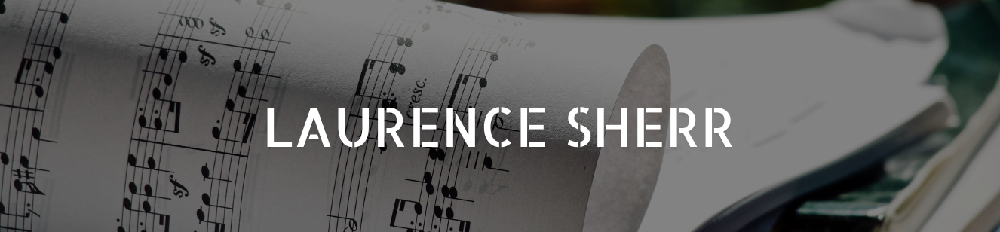

|  | ||||||
| HOME | CREDITS | FEEDBACK PAGE | SITEMAP | |||
Past Events:

2019-20 Season
|
Elegy and Vision
Friedrich Edelmann, bassoon, Rebecca Rust, cello |
Stolperstein concert Synagoge Hainsfarth Nördlingen, Germany October 15, 2019 |
|
Elegy and Vision
Friedrich Edelmann, bassoon, Rebecca Rust, cello |
Kristallnacht Memorial Concert: "Nichts war vergeblich:” Frauen im Widerstand gegen den Nationalsozialismus Dahn, Germany November 9, 2019 |
|
Khayele's Waltz
Andrew Uren, clarinet, Katherine Hebley, cello |
Ellerslie War Memorial Hall
Friends of the Auckland Philharmonia Auckland, New Zealand November 22, 2019 |
|
Elegy and Vision
Parry Karp, cello |
Saint John’s On The Lake Milwaukee, WI January 17, 2020 |
|
Elegy and Vision
Friedrich Edelmann, bassoon, Rebecca Rust, cello |
Old St. Mary’s Cathedral San Francisco, CA January 21, 2020 NoonTime Concert Series |
|
Khayele's Waltz
Friedrich Edelmann, bassoon, Rebecca Rust, cello World premiere of the bassoon–cello version |
International Holocaust Remem
ance Day event Holocaust Museum LA 100 S. The Grove Dr. Los Angeles, California 90036 January 27, 2020 |
|
Khayele's Waltz
Friedrich Edelmann, bassoon, Rebecca Rust, cello |
Retirement home concert Oakland, CA February 12, 2020 |